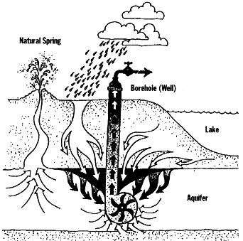
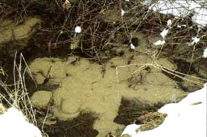
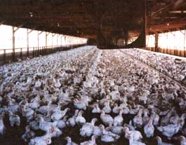
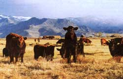

The Great Bottled Water Debate
June/July 1996
Bits and Pieces
"Would you prefer plain, carbonated, boreholed, or natural spring, sir?"
By Scott Patterson
On November 13, 1995, the FDA, after much delay, published regulations that will allegedly clean up the bottled water indus try. A major aspect of the FDA regulations stems from a practice in which over 50 percent of the bottled water industry participate--borehole drilling. Water obtained from a borehole does not naturally flow from a spring but rather, like well water, is forcefully sucked from the ground with hydraulic pumps.
The dilemma before the FDA in November of '95 was this: is it truthful to label water drilled from a borehole "natural spring water." The FDA decided that no substantial difference exists, and as long as the borehole water is identical to the water that flows from the spring, the "natural spring water" label may remain.
But is there really no difference between naturally flowing spring water and borehole water, or do those who actually market naturally emerging spring water wish to create a controversy when there essentially is none? Besides having a rather ominous name, is borehole water safe?
Many hydrogeologists believe that water pumped from aquifers near springs can change as a result of intense pressures the suction creates. Boreholes pump out hundreds of gallons per minute, creating a suction in the surrounding region which draws water from areas not associated with the spring. Contaminated ground water can then enter the borehole area, something that ostensibly could never happen in a natural spring.
SPRING WATER:
a flow of water rising or issuing naturally from the earth.
(Oxford English Dictionary)
"By definition the borehole will be shallow," said Dr. Susan N. Boutros, president of Environmental Associates, in a letter to the FDA in 1993. "Wells less than fifty feet in depth," she continues, "and [those] less than 200 feet from a surface water are considered at risk of surface contamination."
Bill Sharp, a professor of geology at Penn State, asserts: "You can create a situation where water from surrounding areas flows towards the borehole, especially in boreholes close to the surface, creating the possibility of higher contaminants." Contaminants such as cryptosparidium and giardia can enter the aquifer through surface water. There are no federal stipulations for the appropriate depth of a borehole.
As if that were not complicated enough, boreholes can interrupt the natural flow of the aquifer that feeds the spring. Bill Miller, president of the National Spring Water Association, says that boreholes "upset the equilibrium" of a spring. Miller compares borehole drilling to stripmining for gold or clear-cutting forests, rapidly depleting water resources. In Nacodoches, Texas, Ozarka, a bottled water company owned by Perrier, had to abandon a spring that became contaminated by manganese. Many experts believe the poisoning resulted from the pumping of the spring. Citizens in Fort Worth lobbied unsuccessfully against Ozarka's borehole drilling at Rohr Spring, which impacts a community of 5,000. Dale Groom, head of the citizens action committee, claims the borehole will drain privately owned wells. "We have this foreign-owned bottler who has come in and is taking people's water," says Groom. On March 8, one week after pumping began, the well of Bart Sipriano, which lies half a mile from the Ozarka site, went dry.
Jim Heaton, former president of the NSWA, says that borehole drilling can "destroy a watershed area." "Our watershed areas are becoming slim for pure and natural water," Heaton claims. "Water systems are becoming old. If we don't protect these watersheds in the future, then what will our children do for clean, safe water?"
The International Bottled Water Association, which represents nearly 85 percent of bottled water companies including Perrier, Poland Spring, and Ozarka, favors regulations allowing drilled water to be labeled as spring water. Tyrone Wilson, a spokesman for the IBWA, says, "We know it's not the best system, but we're happy with it."
The 1995 ruling says that any borehole water chemically different from the water that emerges naturally from the spring cannot have a natural spring label. But many question the efficacy of the FDA to monitor the industry. Mark Izeman of the National Resources Defense Council says, "The FDA is anemic. Any promise they make to enforce a ruling is really farcical." The FDA admits that it does not individually monitor the bottled water industry but rather relies largely on self-regulation by the bottlers. The FDA randomly tests for contaminants by taking samples from supermarket shelves.
Bottled water is certainly one of the safest, purest food products on the market today. Even borehole water is in general extremely safe. A wide array of postextraction purifying tech niques such as ozone and radiation treatment provide a high percentage of safety. As Eddie Lauth, owner of AquaPenn, a naturally emerging spring water company in Pennsylvania, states, "What is more important than how the water is extracted is how the water is treated afterwards." Yet, as many experts believe, borehole water is potentially less pure than natural spring water. Contaminants can escape the purification barrage that water undergoes, as the infamous Perrier incident of the early 90s proved when bottles of Perrier had to be pulled off the shelves due to contamination by small traces of benzene. The FDA, however, along with the IBWA, feels that this difference isn't significant enough to notify the public through distinctions in labeling. Others are not so sure.
Kinder, Gender Dinners
Market forces have finally brought megastores such as Safeway, Giant, and Food Emporium to begin stocking animal produce that has been brought to market with some concern for the animals' welfare.
Often this simply means that animals have been raised on organic feed and with less reliance on hormones and antibiotics.
Although the USDA is working on an "organic" classification label that will cover meat and poultry, for now consumers must do a little research on individual company brands. The Humane Society prints a brochure of preferred producers, and other groups, like the Food Animals Concern Trust, have started lending their imprimatur to companies that meet their ethical criteria.
The founder of Coleman Natural Meats, which did a brisk $40 million in business last year, sees a watershed in American agriculture approaching. Farmers, ranchers, and academics pulled together, he says, to meet the postwar challenge of growing cheaper food more efficiently, says Mel Coleman, who sits on an advisory board of the Humane Society. Now, says Coleman, whose grandchildren will be the sixth generation of ranchers in his family, American livestock producers must cede the low-cost producer status to countries like Mexico and Indonesia and position themselves, and American agriculture, to "raise high-quality foods sustainably for markets everywhere." A self-described Archie Bunker Republican, Coleman says anyone can be green. With almost evan gelical zeal he explains that when you raise cattle on rangeland grasses rather than exclusively on grain "you don't use anything but the sun's energy."
Ironically, as many Americans have cut back on their intake of red meat and switched to poultry, they have cast their food-dollar ballot in favor of the most intensive of all the livestock industries. Snarfing back mounds of succulent white meat, most people don't consider the pervasive practice of debeaking, nor do they care whether the bird spent its entire life without taking a dust bath. The curtailment, or all-out suppression, of innate drives-what veterinarians call pathogenic conditions-leads ultimately to antisocial and unnatural behaviors. Stress-induced illnesses lead only to further "corrective" measures by the factory farm caretaker.
But before we can dive into a bucket of free-range chicken, Karen Davis, founder of United Poultry Concerns, cautions that "terms like free range ...sound like Disney fantasyland and that's about what they are." The label makes consumers feel good because they are allowed to imagine birds strutting in the low grass, clucking in the sun. Reality sometimes comes closer to 100,000 longhorns crammed together on a gymnasium floor. Even under the best of circumstances, the animals' essential natures are still suppressed.
It comes to a question of degrees, and of personal tolerances. Consumers are learning, as Humane Society vice-president for bioethics Michael W. Fox puts it, that "it's not what [statements] come out of your mouth, it's what you put into your mouth that can really make a difference:'
"People are asking for change in terms of agriculture and livestock production;" says Organic Trade Association director Katherine DiMatteo, "We're just at the point of breaking the industry wide open:'
-David U. Andrews
 Natural spring water bottlers argue that drilled well water should not be sold as ""spring water"" and that drilling borehole wells can draw contaminated surface water into otherwise pure natural spring aquifiers nearby. |
 Appalachian spring water, bottled by AquaPenn, runs off into Spruce Creek in Center County, Pennsylvania. |
 These ""free-range"" chickens might not be quite the happy, wandering fowl you'd imagined. |
|
 Only some organically raised beef cattle (such as a few of Mel Coleman's here) really are ""free-range."" |
 |
|